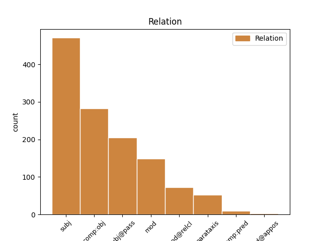
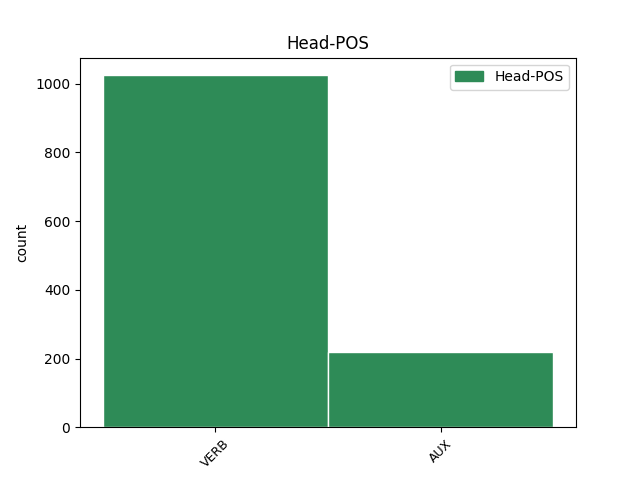
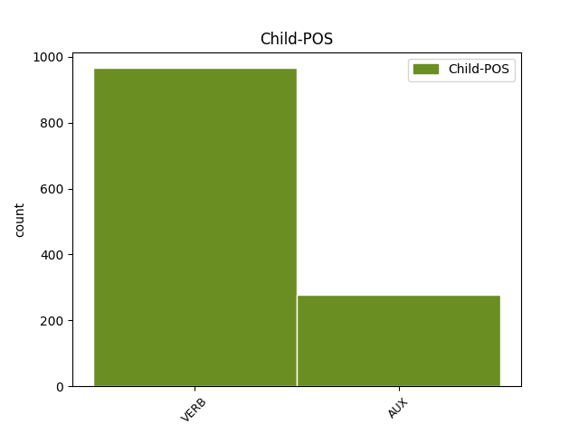

Distribution of features within this leaf



Agreement Rules sorted by frequency.
- When the dependent token is the subject(subj) of the head token,
1 illud _ _ _ _ 0 _ _ _
2 enim _ _ _ _ 0 _ _ _
3 quo _ _ _ _ 0 _ _ _
4 primo _ _ _ _ 0 _ _ _
5 aliquid _ _ _ _ 0 _ _ _
6 operatur _ _ _ _ 0 _ _ _
7 , _ _ _ _ 0 _ _ _
8 est _ _ _ _ 0 _ _ _
9 forma _ _ _ _ 0 _ _ _
10 eius _ _ _ _ 0 _ _ _
11 cui _ _ _ _ 0 _ _ _
12 operatio _ _ _ _ 0 _ _ _
13 attribuitur _ _ _ _ 0 _ _ _
14 , _ _ _ _ 0 _ _ _
15 sicut _ _ _ _ 0 _ _ _
16 quo _ _ _ _ 0 _ _ _
17 primo _ _ _ _ 0 _ _ _
18 sanatur _ _ _ _ 0 _ _ _
19 corpus _ _ _ _ 0 _ _ _
20 , _ _ _ _ 0 _ _ _
21 est _ _ _ _ 0 _ _ _
22 sanitas _ _ _ _ 0 _ _ _
23 , _ _ _ _ 0 _ _ _
24 et _ _ _ _ 0 _ _ _
25 quo _ _ _ _ 0 _ _ _
26 primo _ _ _ _ 0 _ _ _
27 scit scio VERB M3|modA|tem1|gen6 Mood=Ind|Number=Sing|Person=3|Tense=Pres|VerbForm=Fin|Voice=Act 30 subj _ _
28 anima _ _ _ _ 0 _ _ _
29 , _ _ _ _ 0 _ _ _
30 est sum AUX N3|modA|tem1|gen6 Mood=Ind|Number=Sing|Person=3|Tense=Pres|VerbForm=Fin|Voice=Act 0 _ _ _
31 scientia _ _ _ _ 0 _ _ _
32 ; _ _ _ _ 0 _ _ _
1 ad _ _ _ _ 0 _ _ _
2 primum _ _ _ _ 0 _ _ _
3 ergo _ _ _ _ 0 _ _ _
4 dicendum _ _ _ _ 0 _ _ _
5 quod _ _ _ _ 0 _ _ _
6 boetius _ _ _ _ 0 _ _ _
7 intelligit _ _ _ _ 0 _ _ _
8 per _ _ _ _ 0 _ _ _
9 formas _ _ _ _ 0 _ _ _
10 quae _ _ _ _ 0 _ _ _
11 sunt _ _ _ _ 0 _ _ _
12 sine _ _ _ _ 0 _ _ _
13 materia _ _ _ _ 0 _ _ _
14 , _ _ _ _ 0 _ _ _
15 rationes _ _ _ _ 0 _ _ _
16 rerum _ _ _ _ 0 _ _ _
17 quae _ _ _ _ 0 _ _ _
18 sunt _ _ _ _ 0 _ _ _
19 in _ _ _ _ 0 _ _ _
20 mente _ _ _ _ 0 _ _ _
21 divina _ _ _ _ 0 _ _ _
22 , _ _ _ _ 0 _ _ _
23 sicut _ _ _ _ 0 _ _ _
24 etiam _ _ _ _ 0 _ _ _
25 apostolus _ _ _ _ 0 _ _ _
26 dicit dico VERB N3|modA|tem1|gen6 Mood=Ind|Number=Sing|Person=3|Tense=Pres|VerbForm=Fin|Voice=Act 0 _ _ _
27 , _ _ _ _ 0 _ _ _
28 heb. _ _ _ _ 0 _ _ _
29 xi _ _ _ _ 0 _ _ _
30 , _ _ _ _ 0 _ _ _
31 fide _ _ _ _ 0 _ _ _
32 credimus credo VERB L3|modA|tem1|gen7 Mood=Ind|Number=Plur|Person=1|Tense=Pres|VerbForm=Fin|Voice=Act 26 comp:obj _ _
33 aptata _ _ _ _ 0 _ _ _
34 esse _ _ _ _ 0 _ _ _
35 saecula _ _ _ _ 0 _ _ _
36 verbo _ _ _ _ 0 _ _ _
37 dei _ _ _ _ 0 _ _ _
38 , _ _ _ _ 0 _ _ _
39 ut _ _ _ _ 0 _ _ _
40 ex _ _ _ _ 0 _ _ _
41 invisibilibus _ _ _ _ 0 _ _ _
42 visibilia _ _ _ _ 0 _ _ _
43 fierent _ _ _ _ 0 _ _ _
44 . _ _ _ _ 0 _ _ _
1 unde _ _ _ _ 0 _ _ _
2 quod _ _ _ _ 0 _ _ _
3 per _ _ _ _ 0 _ _ _
4 se _ _ _ _ 0 _ _ _
5 habet _ _ _ _ 0 _ _ _
6 esse _ _ _ _ 0 _ _ _
7 , _ _ _ _ 0 _ _ _
8 non _ _ _ _ 0 _ _ _
9 potest _ _ _ _ 0 _ _ _
10 generari _ _ _ _ 0 _ _ _
11 vel _ _ _ _ 0 _ _ _
12 corrumpi _ _ _ _ 0 _ _ _
13 nisi _ _ _ _ 0 _ _ _
14 per _ _ _ _ 0 _ _ _
15 se _ _ _ _ 0 _ _ _
16 , _ _ _ _ 0 _ _ _
17 quae _ _ _ _ 0 _ _ _
18 vero _ _ _ _ 0 _ _ _
19 non _ _ _ _ 0 _ _ _
20 subsistunt subsisto VERB L3|modA|tem1|gen9 Mood=Ind|Number=Plur|Person=3|Tense=Pres|VerbForm=Fin|Voice=Act 28 subj@pass _ SpaceAfter=No
21 , _ _ _ _ 0 _ _ _
22 ut _ _ _ _ 0 _ _ _
23 accidentia _ _ _ _ 0 _ _ _
24 et _ _ _ _ 0 _ _ _
25 formae _ _ _ _ 0 _ _ _
26 materiales _ _ _ _ 0 _ _ _
27 , _ _ _ _ 0 _ _ _
28 dicuntur dico VERB N3|modJ|tem1|gen9 Mood=Ind|Number=Plur|Person=3|Tense=Pres|VerbForm=Fin|Voice=Pass 0 _ _ _
29 fieri _ _ _ _ 0 _ _ _
30 et _ _ _ _ 0 _ _ _
31 corrumpi _ _ _ _ 0 _ _ _
32 per _ _ _ _ 0 _ _ _
33 generationem _ _ _ _ 0 _ _ _
34 et _ _ _ _ 0 _ _ _
35 corruptionem _ _ _ _ 0 _ _ _
36 compositorum _ _ _ _ 0 _ _ _
37 . _ _ _ _ 0 _ _ _
1 quaecumque _ _ _ _ 0 _ _ _
2 autem _ _ _ _ 0 _ _ _
3 forma _ _ _ _ 0 _ _ _
4 creata _ _ _ _ 0 _ _ _
5 per _ _ _ _ 0 _ _ _
6 se _ _ _ _ 0 _ _ _
7 subsistens _ _ _ _ 0 _ _ _
8 ponatur pono VERB L3|modK|tem1|gen6 Mood=Sub|Number=Sing|Person=3|Tense=Pres|VerbForm=Fin|Voice=Pass 12 mod _ SpaceAfter=No
9 , _ _ _ _ 0 _ _ _
10 oportet _ _ _ _ 0 _ _ _
11 quod _ _ _ _ 0 _ _ _
12 participet participo VERB J3|modB|tem1|gen6 Mood=Sub|Number=Sing|Person=3|Tense=Pres|VerbForm=Fin|Voice=Act 0 _ _ _
13 esse _ _ _ _ 0 _ _ _
14 , _ _ _ _ 0 _ _ _
15 quia _ _ _ _ 0 _ _ _
16 etiam _ _ _ _ 0 _ _ _
17 ipsa _ _ _ _ 0 _ _ _
18 vita _ _ _ _ 0 _ _ _
19 , _ _ _ _ 0 _ _ _
20 vel _ _ _ _ 0 _ _ _
21 quidquid _ _ _ _ 0 _ _ _
22 sic _ _ _ _ 0 _ _ _
23 diceretur _ _ _ _ 0 _ _ _
24 , _ _ _ _ 0 _ _ _
25 participat _ _ _ _ 0 _ _ _
26 ipsum _ _ _ _ 0 _ _ _
27 esse _ _ _ _ 0 _ _ _
28 , _ _ _ _ 0 _ _ _
29 ut _ _ _ _ 0 _ _ _
30 dicit _ _ _ _ 0 _ _ _
31 dionysius _ _ _ _ 0 _ _ _
32 , _ _ _ _ 0 _ _ _
33 v _ _ _ _ 0 _ _ _
34 cap. _ _ _ _ 0 _ _ _
35 de _ _ _ _ 0 _ _ _
36 div. _ _ _ _ 0 _ _ _
37 nom. _ _ _ _ 0 _ _ _
38 . _ _ _ _ 0 _ _ _
1 praeterea _ _ _ _ 0 _ _ _
2 , _ _ _ _ 0 _ _ _
3 id _ _ _ _ 0 _ _ _
4 quod _ _ _ _ 0 _ _ _
5 per _ _ _ _ 0 _ _ _
6 se _ _ _ _ 0 _ _ _
7 habet _ _ _ _ 0 _ _ _
8 esse _ _ _ _ 0 _ _ _
9 , _ _ _ _ 0 _ _ _
10 non _ _ _ _ 0 _ _ _
11 unitur _ _ _ _ 0 _ _ _
12 corpori _ _ _ _ 0 _ _ _
13 ut _ _ _ _ 0 _ _ _
14 forma _ _ _ _ 0 _ _ _
15 , _ _ _ _ 0 _ _ _
16 quia _ _ _ _ 0 _ _ _
17 forma _ _ _ _ 0 _ _ _
18 est sum VERB N3|modA|tem1|gen6 Mood=Ind|Number=Sing|Person=3|Tense=Pres|VerbForm=Fin|Voice=Act 0 _ _ _
19 quo _ _ _ _ 0 _ _ _
20 aliquid _ _ _ _ 0 _ _ _
21 est sum VERB N3|modA|tem1|gen6 Mood=Ind|Number=Sing|Person=3|Tense=Pres|VerbForm=Fin|Voice=Act 18 mod@relcl _ SpaceAfter=No
22 ; _ _ _ _ 0 _ _ _
1 praeterea _ _ _ _ 0 _ _ _
2 , _ _ _ _ 0 _ _ _
3 quaecumque _ _ _ _ 0 _ _ _
4 potentia _ _ _ _ 0 _ _ _
5 receptiva _ _ _ _ 0 _ _ _
6 est sum AUX N3|modA|tem1|gen6 Mood=Ind|Number=Sing|Person=3|Tense=Pres|VerbForm=Fin|Voice=Act 11 parataxis _ _
7 actus _ _ _ _ 0 _ _ _
8 alicuius _ _ _ _ 0 _ _ _
9 corporis _ _ _ _ 0 _ _ _
10 , _ _ _ _ 0 _ _ _
11 recipit recipio VERB L3|modA|tem1|gen6 Mood=Ind|Number=Sing|Person=3|Tense=Pres|VerbForm=Fin|Voice=Act 0 _ _ _
12 formam _ _ _ _ 0 _ _ _
13 materialiter _ _ _ _ 0 _ _ _
14 et _ _ _ _ 0 _ _ _
15 individualiter _ _ _ _ 0 _ _ _
16 , _ _ _ _ 0 _ _ _
17 quia _ _ _ _ 0 _ _ _
18 receptum _ _ _ _ 0 _ _ _
19 est _ _ _ _ 0 _ _ _
20 in _ _ _ _ 0 _ _ _
21 recipiente _ _ _ _ 0 _ _ _
22 secundum _ _ _ _ 0 _ _ _
23 modum _ _ _ _ 0 _ _ _
24 recipientis _ _ _ _ 0 _ _ _
25 . _ _ _ _ 0 _ _ _
1 et _ _ _ _ 0 _ _ _
2 hoc _ _ _ _ 0 _ _ _
3 est _ _ _ _ 0 _ _ _
4 quod _ _ _ _ 0 _ _ _
5 participat _ _ _ _ 0 _ _ _
6 formam _ _ _ _ 0 _ _ _
7 humanae _ _ _ _ 0 _ _ _
8 naturae _ _ _ _ 0 _ _ _
9 ; _ _ _ _ 0 _ _ _
10 sicut _ _ _ _ 0 _ _ _
11 verum _ _ _ _ 0 _ _ _
12 aurum _ _ _ _ 0 _ _ _
13 dicitur dico VERB N3|modJ|tem1|gen6 Mood=Ind|Number=Sing|Person=3|Tense=Pres|VerbForm=Fin|Voice=Pass 0 _ _ _
14 quod _ _ _ _ 0 _ _ _
15 habet habeo VERB K3|modA|tem1|gen6 Mood=Ind|Number=Sing|Person=3|Tense=Pres|VerbForm=Fin|Voice=Act 13 comp:pred _ _
16 veram _ _ _ _ 0 _ _ _
17 formam _ _ _ _ 0 _ _ _
18 auri _ _ _ _ 0 _ _ _
19 , _ _ _ _ 0 _ _ _
20 ex _ _ _ _ 0 _ _ _
21 qua _ _ _ _ 0 _ _ _
22 est _ _ _ _ 0 _ _ _
23 proprium _ _ _ _ 0 _ _ _
24 esse _ _ _ _ 0 _ _ _
25 auri _ _ _ _ 0 _ _ _
26 . _ _ _ _ 0 _ _ _
1 unde _ _ _ _ 0 _ _ _
2 et _ _ _ _ 0 _ _ _
3 aristoteles _ _ _ _ 0 _ _ _
4 dicit _ _ _ _ 0 _ _ _
5 , _ _ _ _ 0 _ _ _
6 in _ _ _ _ 0 _ _ _
7 ii _ _ _ _ 0 _ _ _
8 de _ _ _ _ 0 _ _ _
9 anima _ _ _ _ 0 _ _ _
10 , _ _ _ _ 0 _ _ _
11 quod _ _ _ _ 0 _ _ _
12 semen _ _ _ _ 0 _ _ _
13 et _ _ _ _ 0 _ _ _
14 fructus _ _ _ _ 0 _ _ _
15 sic _ _ _ _ 0 _ _ _
16 sunt _ _ _ _ 0 _ _ _
17 potentia _ _ _ _ 0 _ _ _
18 vitam _ _ _ _ 0 _ _ _
19 habentia _ _ _ _ 0 _ _ _
20 quod _ _ _ _ 0 _ _ _
21 abiiciunt abjicio VERB L3|modA|tem1|gen9|vgr2 Mood=Ind|Number=Plur|Person=3|Tense=Pres|VerbForm=Fin|Voice=Act 0 _ _ _
22 animam _ _ _ _ 0 _ _ _
23 , _ _ _ _ 0 _ _ _
24 idest _ _ _ _ 0 _ _ _
25 anima _ _ _ _ 0 _ _ _
26 carent careo VERB K3|modA|tem1|gen9 Mood=Ind|Number=Plur|Person=3|Tense=Pres|VerbForm=Fin|Voice=Act 21 mod@appos _ SpaceAfter=No
27 : _ _ _ _ 0 _ _ _
28 cum _ _ _ _ 0 _ _ _
29 tamen _ _ _ _ 0 _ _ _
30 id _ _ _ _ 0 _ _ _
31 cuius _ _ _ _ 0 _ _ _
32 anima _ _ _ _ 0 _ _ _
33 est _ _ _ _ 0 _ _ _
34 actus _ _ _ _ 0 _ _ _
35 , _ _ _ _ 0 _ _ _
36 sit _ _ _ _ 0 _ _ _
37 potentia _ _ _ _ 0 _ _ _
38 vitam _ _ _ _ 0 _ _ _
39 habens _ _ _ _ 0 _ _ _
40 , _ _ _ _ 0 _ _ _
41 non _ _ _ _ 0 _ _ _
42 tamen _ _ _ _ 0 _ _ _
43 abiiciens _ _ _ _ 0 _ _ _
44 animam _ _ _ _ 0 _ _ _
45 . _ _ _ _ 0 _ _ _
Disagree Examples:
1 et _ _ _ _ 0 _ _ _
2 sic _ _ _ _ 0 _ _ _
3 oportet _ _ _ _ 0 _ _ _
4 ut _ _ _ _ 0 _ _ _
5 quicumque _ _ _ _ 0 _ _ _
6 alius _ _ _ _ 0 _ _ _
7 ab _ _ _ _ 0 _ _ _
8 ipso _ _ _ _ 0 _ _ _
9 beatus _ _ _ _ 0 _ _ _
10 est sum AUX N3|modA|tem1|gen6 Mood=Ind|Number=Sing|Person=3|Tense=Pres|VerbForm=Fin|Voice=Act 14 subj@pass _ SpaceAfter=No
11 , _ _ _ _ 0 _ _ _
12 participatione _ _ _ _ 0 _ _ _
13 beatus _ _ _ _ 0 _ _ _
14 dicatur dico VERB N3|modK|tem1|gen6 Mood=Sub|Number=Sing|Person=3|Tense=Pres|VerbForm=Fin|Voice=Pass 0 _ _ _
15 . _ _ _ _ 0 _ _ _
1 unde _ _ _ _ 0 _ _ _
2 , _ _ _ _ 0 _ _ _
3 cum _ _ _ _ 0 _ _ _
4 psalmus _ _ _ _ 0 _ _ _
5 diceret dico VERB N3|modB|tem2|gen6 Aspect=Imp|Mood=Sub|Number=Sing|Person=3|Tense=Imp|VerbForm=Fin|Voice=Act 0 _ _ _
6 , _ _ _ _ 0 _ _ _
7 mirabilis _ _ _ _ 0 _ _ _
8 facta _ _ _ _ 0 _ _ _
9 est sum AUX N3|modA|tem1|gen6 Mood=Ind|Number=Sing|Person=3|Tense=Pres|VerbForm=Fin|Voice=Act 5 comp:obj _ _
10 scientia _ _ _ _ 0 _ _ _
11 tua _ _ _ _ 0 _ _ _
12 ex _ _ _ _ 0 _ _ _
13 me _ _ _ _ 0 _ _ _
14 : _ _ _ _ 0 _ _ _
15 confortata _ _ _ _ 0 _ _ _
16 est _ _ _ _ 0 _ _ _
17 , _ _ _ _ 0 _ _ _
18 et _ _ _ _ 0 _ _ _
19 non _ _ _ _ 0 _ _ _
20 potero _ _ _ _ 0 _ _ _
21 ad _ _ _ _ 0 _ _ _
22 eam _ _ _ _ 0 _ _ _
23 : _ _ _ _ 0 _ _ _
24 et _ _ _ _ 0 _ _ _
25 adiungeret _ _ _ _ 0 _ _ _
26 divinae _ _ _ _ 0 _ _ _
27 illuminationis _ _ _ _ 0 _ _ _
28 auxilium _ _ _ _ 0 _ _ _
29 cum _ _ _ _ 0 _ _ _
30 dicit _ _ _ _ 0 _ _ _
31 . _ _ _ _ 0 _ _ _
1 ut _ _ _ _ 0 _ _ _
2 patet _ _ _ _ 0 _ _ _
3 in _ _ _ _ 0 _ _ _
4 illis _ _ _ _ 0 _ _ _
5 qui _ _ _ _ 0 _ _ _
6 voluntates _ _ _ _ 0 _ _ _
7 hominum _ _ _ _ 0 _ _ _
8 astris _ _ _ _ 0 _ _ _
9 supponunt _ _ _ _ 0 _ _ _
10 , _ _ _ _ 0 _ _ _
11 contra _ _ _ _ 0 _ _ _
12 quos _ _ _ _ 0 _ _ _
13 dicitur dico VERB N3|modJ|tem1|gen6 Mood=Ind|Number=Sing|Person=3|Tense=Pres|VerbForm=Fin|Voice=Pass 0 _ _ _
14 ierem. _ _ _ _ 0 _ _ _
15 10-2 _ _ _ _ 0 _ _ _
16 , _ _ _ _ 0 _ _ _
17 a _ _ _ _ 0 _ _ _
18 signis _ _ _ _ 0 _ _ _
19 caeli _ _ _ _ 0 _ _ _
20 nolite nolo VERB N3|modC|tem1|gen8 Mood=Imp|Number=Plur|Person=2|Tense=Pres|VerbForm=Fin|VerbType=Mod|Voice=Act 13 subj@pass _ _
21 metuere _ _ _ _ 0 _ _ _
22 , _ _ _ _ 0 _ _ _
23 quae _ _ _ _ 0 _ _ _
24 gentes _ _ _ _ 0 _ _ _
25 timent _ _ _ _ 0 _ _ _
26 ; _ _ _ _ 0 _ _ _
27 et _ _ _ _ 0 _ _ _
28 in _ _ _ _ 0 _ _ _
29 illis _ _ _ _ 0 _ _ _
30 qui _ _ _ _ 0 _ _ _
31 angelos _ _ _ _ 0 _ _ _
32 creatores _ _ _ _ 0 _ _ _
33 animarum _ _ _ _ 0 _ _ _
34 existimant _ _ _ _ 0 _ _ _
35 ; _ _ _ _ 0 _ _ _
36 et _ _ _ _ 0 _ _ _
37 animas _ _ _ _ 0 _ _ _
38 hominum _ _ _ _ 0 _ _ _
39 esse _ _ _ _ 0 _ _ _
40 mortales _ _ _ _ 0 _ _ _
41 ; _ _ _ _ 0 _ _ _
42 et _ _ _ _ 0 _ _ _
43 si _ _ _ _ 0 _ _ _
44 qua _ _ _ _ 0 _ _ _
45 similia _ _ _ _ 0 _ _ _
46 hominum _ _ _ _ 0 _ _ _
47 derogant _ _ _ _ 0 _ _ _
48 dignitati _ _ _ _ 0 _ _ _
49 . _ _ _ _ 0 _ _ _
1 deus _ _ _ _ 0 _ _ _
2 autem _ _ _ _ 0 _ _ _
3 est _ _ _ _ 0 _ _ _
4 actus _ _ _ _ 0 _ _ _
5 ipse _ _ _ _ 0 _ _ _
6 , _ _ _ _ 0 _ _ _
7 non _ _ _ _ 0 _ _ _
8 autem _ _ _ _ 0 _ _ _
9 est _ _ _ _ 0 _ _ _
10 ens _ _ _ _ 0 _ _ _
11 actu _ _ _ _ 0 _ _ _
12 per _ _ _ _ 0 _ _ _
13 aliquem _ _ _ _ 0 _ _ _
14 actum _ _ _ _ 0 _ _ _
15 qui _ _ _ _ 0 _ _ _
16 non _ _ _ _ 0 _ _ _
17 sit sum VERB N3|modB|tem1|gen6 Mood=Sub|Number=Sing|Person=3|Tense=Pres|VerbForm=Fin|Voice=Act 0 _ _ _
18 quod _ _ _ _ 0 _ _ _
19 est sum AUX N3|modA|tem1|gen6 Mood=Ind|Number=Sing|Person=3|Tense=Pres|VerbForm=Fin|Voice=Act 17 comp:obj _ _
20 ipse _ _ _ _ 0 _ _ _
21 : _ _ _ _ 0 _ _ _
22 cum _ _ _ _ 0 _ _ _
23 in _ _ _ _ 0 _ _ _
24 eo _ _ _ _ 0 _ _ _
25 nulla _ _ _ _ 0 _ _ _
26 sit _ _ _ _ 0 _ _ _
27 potentialitas _ _ _ _ 0 _ _ _
28 , _ _ _ _ 0 _ _ _
29 ut _ _ _ _ 0 _ _ _
30 in _ _ _ _ 0 _ _ _
31 primo _ _ _ _ 0 _ _ _
32 libro _ _ _ _ 0 _ _ _
33 ostensum _ _ _ _ 0 _ _ _
34 est _ _ _ _ 0 _ _ _
35 . _ _ _ _ 0 _ _ _
1 quomodo _ _ _ _ 0 _ _ _
2 autem _ _ _ _ 0 _ _ _
3 multiplicitas _ _ _ _ 0 _ _ _
4 significationis _ _ _ _ 0 _ _ _
5 unius _ _ _ _ 0 _ _ _
6 rei _ _ _ _ 0 _ _ _
7 veritati _ _ _ _ 0 _ _ _
8 non _ _ _ _ 0 _ _ _
9 praeiudicet praejudico VERB J3|modB|tem1|gen6|vgr2 Mood=Sub|Number=Sing|Person=3|Tense=Pres|VerbForm=Fin|Voice=Act 22 subj _ SpaceAfter=No
10 , _ _ _ _ 0 _ _ _
11 ex _ _ _ _ 0 _ _ _
12 his _ _ _ _ 0 _ _ _
13 quae _ _ _ _ 0 _ _ _
14 in _ _ _ _ 0 _ _ _
15 primo _ _ _ _ 0 _ _ _
16 libro _ _ _ _ 0 _ _ _
17 ostensa _ _ _ _ 0 _ _ _
18 sunt _ _ _ _ 0 _ _ _
19 , _ _ _ _ 0 _ _ _
20 manifestum _ _ _ _ 0 _ _ _
21 esse _ _ _ _ 0 _ _ _
22 potest possum VERB N3|modA|tem1|gen6 Mood=Ind|Number=Sing|Person=3|Tense=Pres|VerbForm=Fin|VerbType=Mod|Voice=Act 0 _ _ _
23 . _ _ _ _ 0 _ _ _